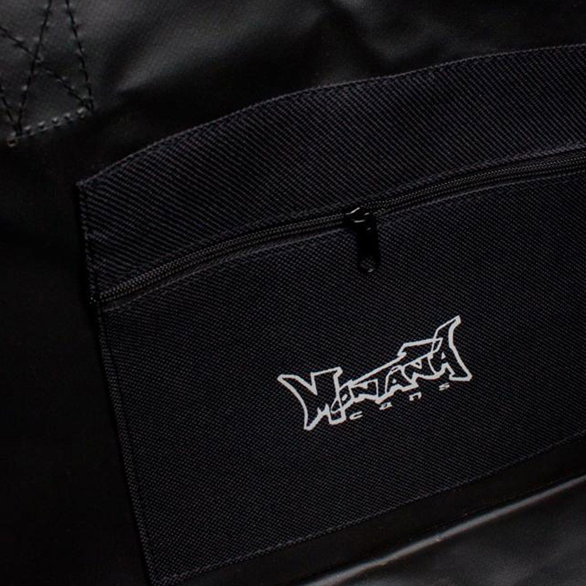

VIDEO
Krepšys - DRDtools.lt 2020.10.29 07:17
 +370 656 08706
info@drdtools.lt
Kontaktai
Katalogas
ELEKTRINIAI ĮRANKIAI Poliravimo įranga Poliruokliai Priedai Diskai Kempinės Kiti priedai Šlifavimo įranga Šlifuokliai glaistui Ekscentriniai šlifuokliai Daugiafunkciniai šlifuokliai Šlifavimo staklės Trikampiai šlifuokliai Juostiniai šlifuokliai Tiesiniai šlifuokliai Vibraciniai šlifuokliai Šlifuokliai betonui Vamzdžių šlifavimui Diskiniai šlifuokliai Priedai Šlifavimo diskai betonui Antgaliai Šlifavimo ritinėliai Abrazyvinės juostos Šlifavimo tinkleliai gipsui Šlifavimo diskai akmeniui Šlifavimo diskai plienui Šlifavimo diskai medžiui Švytrinis popierius Poliravimo diskai Žarnos Kiti šlifavimo/ poliravimo diskai Abrazyviniai/ vieliniai šepečiai šlifuokliams Atsarginės dalys / detalės Kampiniai šlifuokliai Kampiniai šlifuokliai (iki Ø 125 mm) Kampiniai šlifuokliai (iki Ø 230 mm) Gręžimo įrenginiai Gręžtuvai Perforatoriai SDS max SDS plius Smūginiai gręžtuvai Deimantinio gręžimo įrenginiai Gręžimo staklės / Stacionarūs įrenginiai Gręžtuvai-maišytuvai Kampiniai gręžtuvai Magnetiniai gręžtuvai Mini gręžtuvai Priedai Deimantinės karūnėles BI-METAL karūnėlės Karūnėlės medžiui Inkarai Kaltai/ grąžtai Kaltai betonui SDS+ SDS-Max Hex Kaltai medžiui Grąžtai metalui Grąžtai betonui SDS+ SDS-Max Hex Grąžtai medžiui Grąžtų rinkiniai Grąžtai stiklui ir keramikai Grąžtai pakopiniai Detalės Guoliai Stovai Stūmokliai Švaistikliai Volframinės karūnėlės Vamzdžiai Pjovimo įrenginiai Pjovimo staklės / Stacionarūs įrenginiai Medžio pjovimo staklės Metalo pjovimo staklės Plytelių pjovimo staklės Daugiafunkcinės staklės Pjūklo stalai Diskiniai pjūklai Siaurapjūkliai Elektriniai pjūklai Juostiniai pjūklai Tiesiniai pjūklai Vagapjovės Priedai Siaurapjūklių pjūklai Detalės Dentračiai Pjovimo ratukai Diskai sausam/šlapiam pjovimui Diskai sausam pjovimui Diskai šlapiam pjovimui Diskiniai pjūklai medienai Diskiniai pjūklai spalvotiesiems metalams Universalūs diskiniai pjūklai Žirklės metalui Orapūtės Orapūtės Priedai Obliai Lituokliai Litavimo stotelės Dujiniai lituokliai Vamzdžių lituokliai Plastiko remonto rinkiniai Indukciniai kaitintuvai Priedai Galąstuvai Galąstuvai Galąstuvų priedai Maišyklės Maišyklės Maišyklių priedai Juostiniai suktuvai Giluminiai vibratoriai Giluminiai vibratoriai betonui Giluminių vibratorių velenai Pjovimo peiliai polistirolui Frezavimo įrenginiai Frezeriai Frezavimo staklės Priedai El. vamzdžių sriegikliai Valymo / plovimo įranga Dulkių siurbliai Pramoniniai dulkių siurbliai Ciklonai Drožlių siurbliai Priedai Atskėlimo plaktukai Kabiamušiai Graveriai Medžio tekinimo staklės Metalo tekinimo staklės Klijų pistoletai El. Klijų pistoletai Priedai Daugiafunkciniai įrankiai Daugiafunkciniai įrankiai Priedai Tinklo adapteriai Kiti el.įrankiai SUVIRINIMO ĮRANGA MIG(Pusautomačiai) MMA TIG (Invertoriniai) Plazminiai pjovimo aparatai Taškinio suvirinimo įrenginiai "Spoteriai" MMA (Transformatoriniai) Skydeliai Stiklai skydeliams Detalės Degikliai Elektrodai Antgaliai Viela / tiekimo įtaisai Aušinimo ventiliatoriai Kabeliai Magnetai (laikikliai) Dujų reguliatoriai Diodai Pedalai Elektrodų džiovintuvai Jungikliai Štuceriai/ Lizdai Elektrodų laikikliai Tiltai Kiti priedai AKUMULIATORINIAI ĮRANKIAI Gręžtuvai-suktuvai Li-on Ni-Mh / Ni-Cd Perforatoriai Įrankių komplektai Pjūklai Diskiniai pjūklai Siaurapjūkliai Tiesiniai pjūklai Žirklės metalui Švytuokliniai pjūklai Grandininiai pjūklai Šlifuokliai Kampiniai šlifuokliai Tiesiniai šlifuokliai Daugiafunkciniai šlifuokliai Poliruokliai ir priedai Daugiafunkciniai įrankiai Kabiamušiai / viniamušiai Kniedikliai ir priedai Obliai Dulkių siurbliai Klijų/Silikono/Hermetiko pistoletai Radijo imtuvai Kt. akumuliatoriniai įrankiai Priedai akumuliatoriniams įrankiams Akumuliatoriai Krovikliai ir adapteriai Kt. priedai ŠILDYMO / VĖDINIMO ĮRANGA Dujiniai šildytuvai Dyzeliniai šildytuvai Elektriniai šildytuvai Infraraudonujų spindulių šildytuvai Oro sausintuvai Aušintuvai Klimato kontrolės technika Automobiliniai šildytuvai NIVELYRAI Lazeriniai nivelyrai Lazerio imtuvai ir priedai Optiniai nivelyrai Rotaciniai nivelyrai DAŽYMO ĮRANGA Dažymo aparatai Pulverizatoriai Priedai Tinkavimo pistoletai Aerografai AKUMULIATORIŲ KROVIKLIAI / DALYS SODO TECHNIKA Vėjapjovės Akumuliatorinės vejapjovės Benzininės vejapjovės Benzininės savaeigės vejapjovės Elektrinės vejapjovės Mechaninės Vejapjovės Robotai Trimeriai / Žoliapjovės Benzininiai trimeriai Elektriniai trimeriai Akumuliatoriniai trimeriai Valai Detalės Purkštuvai Akumuliatoriniai purkštuvai Benzininiai purkštuvai Rankiniai purkštuvai Barstytuvai Benzininiai grandininiai pjūklai Benzininiai grandininiai pjūklai Priedai Malkų skaldyklės Žemės grąžtai Šakų smulkintuvai Siurbliai Siurbliai švariam/ purvinam vandeniui Fekaliniai siurbliai Vandens/fekalinės žarnos Giluminiai siurbliai Membraniniai siurbliai Hidroforiniai siurbliai Benzininiai siurbliai Priedai siurbliams Generatoriai Benzininiai generatoriai Invertoriniai generatoriai Aeratoriai Gyvatvorių žirklės Gyvūnų kirpimo mašinėlės Pūstuvai Laistymo žarnos Fontanai Grėbliai Kibirai Namų apyvokos prekės Vibro pluokštės Sniego valymo įranga Kastuvai Valytuvai Kita benzininė technika ORO KOMPRESORIAI Vienfaziai oro kompresoriai Trifaziai oro kompresoriai Oro kompresoriai 12V Atsarginės dalys PNEUMATINIAI ĮRANKIAI Pneumatinės terkšlės galvutėms Pneumatiniai kabiamūšiai/ viniamušiai Kabiamušiai / Viniamušiai Kabės / vinys Kabės Vinys Pneumatiniai prapūtimo/ nupūtimo pistoletai Pneumatiniai praplovimo pistoletai Silikono/ germetiko/ gravitekso pistoletai Pneumatiniai gręžtuvai Pneumatiniai kaltai / plaktukai Pneumatiniai kniedikliai Pjovikliai/ kampiniai šlifuokliai Pneumatiniai tiesiniai šlifuokliai Ekscentriniai šlifuokliai Vibraciniai šlifuokliai Juostiniai šlifuokliai Pneumatiniai stiklo pjovikliai / žirklės Oro srauto reguliatoriai ir tepalinės Priedai pneumatiniams įrankiams Žarnos Jungimo movos Greitos jungtys Kištukai Oro paskirstytojai Antgaliai Poliravimui/ šlifavimui Pneumatiniai rinkiniai Pneumatiniai siaurapjūkliai AUTOSERVISO ĮRANKIAI Variklio ardymo, paskirstymo velenų fiksavimo, diržo, pompos skremulio, smagračio, alkūninių velenų įrankių rinkiniai Įrankiai variklio remontui Veleno remonto irankiai Diržų montavimo įrankiai Grandinių remonto įrankiai Smagračiai Siurblių nuėmėjai Kaiščiai Raktai ir adapteriai Kaitinimo ir kibirkštinių žvakių remontas Presavimo įrankiai: sailentblokų, guminių įvorių, guolių presavimas / Rinkiniai Nuėmėjai Įrankiai dyzeliniam / benzininiam įpurkškimui Įrankiai stabdžių sistemos remontui/ nuorinimui/ įrankiai diskiniams stabdžiams Įrankiai važiuoklės remontui: vairo traukių nuėmėjai, šarnyrų nuėmėjai, kiti įrankiai Skremulių, škivų atsukimo, vandens pompų nuėmimo, diržo įtempimo reguliavimo įrankiai Įrankiai vožtuvams, cilindrams, stūmokliams Vairo mechanizmo įrankiai Tepalinės Stebulės, kardano, stabdžių būgnų, pusašių iškalėjai, atbuliniai plaktukai Kuro siurbliai Tepalo filtro, kuro bako kamščių raktai Diagnostikos priemonės Įtampos keitikliai / automobiliniai šaldytuvai Įrankiai automobilių apdailos ardymui Specializuotos galvutės / Rinkiniai Įrankiai sunkvežimiams Tepalo išleidimo įrankiai Padidintos jėgos raktai Raktai ratams Įrankiai generatoriaus remontui Aušinimo ir kondicionavimo sistemos įrankiai Įrankiai sankabai / pavarų dėžės remontui Magnetiniai įrankiai: griebtuvai su LED lemputėmis, veidrodėliai, lėkštelės, juostelės ir kt. Rankinės, kojinės pompos Įrankiai automobilių stiklams ĮRANKIAI KĖBULO REMONTUI HIDRAULINĖ ĮRANGA Hidrauliniai presai Hidrauliniai cilindrai Hidraulinės pompos kojinės, rankinės Hidrauliniai spyruoklių suspaudėjai Nešiojami hidrauliniai įrenginiai Hidrauliniai kranai Hidrauliniai guolių nuėmikliai Hidrauliniai vamzdžių lankstytuvai Hidrauliniai motocikliniai keltuvai/ stovai Hidraulinės žirklės Kiti hidrauliniai įrankiai PADANGŲ / RATŲ SERVISO ĮRANGA PAKELĖJAI Hidrauliniai su ratukais, pastatomi Atramos/ stendai varikliams Atramos automobiliams Transmisijos Pneumo-hidrauliniai Pneumatiniai Mechaniniai Mašininiai hidrauliniai keltuvai Rampos Motocikliniai hidrauliniai keltuvai Priedai ĮRANKIŲ SPINTELĖS / GULTAI / DARBASTALIAI Kėdutės / gultai / vežimėliai Įrankių spintelės / įrankiai spintelėms / dėžės Darbastaliai VERŽLIASUKIAI Pneumatiniai veržliasukiai Elektriniai veržliasukiai Akumuliatoriniai veržliasukiai GERVĖS Elektrinės kėlimo gervės Akumuliatorinės traukimo gervės Grandininės kėlimo gervės Rankinės traukimo gervės Priedai gervėms Krovinio tvirtinimo diržai SMĖLIAVIMO ĮRANGA Smėliasrovės/ kabinos Rankinės smėliasrovės Priedai RANKINIAI ĮRANKIAI IR PRIEDAI Galvutės, galvučių ir įrankių rinkiniai Galvutės Galvutės 1/2" Galvutės 1/4" Galvutės 3/4" 6-kampų Galvutės 3/4" 12-kampų Galvutės 3/8" Galvutės 1" Galvutės smūginės 1/2" Galvutės smūginės ilgos 1/2" Galvutės smūginės ilgos 1" Galvutės smūginės 1" Galvutės smūginės ilgos 3/4" Galvutės smūginės 3/4" Smūginės E-tipo galvutės Galvutės sraigtinės, sugadintiems varžtams rinkiniai Plonasienės smūginės galvutės ratams Galvutės smūginės ilgos plonasienės 12-kampės 1/2" pusašiams ir kt. Šarnyrinės galvutės Galvučių prailgintuvai Sukomplektuotos galvutės 1" Sukomplektuotos galvutės 1/2" Sukomplektuotos galvutės 1/4" Sukomplektuotos galvutės 3/4" Sukomplektuotos galvutės 3/8" Galvutės E-Star tipo varžtams Galvutės coliniais dydžiais Daugiafunkcinės galvutės Kiauryminių galvučių komplektai Kombinuoti įrankių rinkiniai 1/4", 3/8", 1/2" Įrankių rinkinys 1" Įrankių rinkinys 1/2" Įrankių rinkinys 1/4" Įrankių rinkinys 3/4" Įrankių rinkinys 3/8" Galvučių rinkiniai Įrankių rinkiniai Rankenos galvutėms Ilgintuvai galvutėms Smūginiai ilgintuvai Galvučių laikikliai Vartomos/šarnyrinės rankenos su galvute Spyruokliniai ilgintuvai T-formos rankenos galvutėms ir antgaliams Rankenos galvutėms slankiojančiu kvadratu Spyruoklinės rankenos galvutėms, antgaliams Rankenėlės galvutėms ir antgaliams L-tipo rankenos galvutėms Vartomos rankenos galvutėms Bitukai, įpresuoti antgaliai, smūginiai antgaliai, antgalių rinkiniai, antgalių laikikliai Antgaliai įpresuoti į galvutę 1/2" Spline Antgaliai 5/16" (8 mm storio) Antgaliai įpresuoti į galvutę 1/2" T-star/Torx 5-kampiai antgaliai Antgaliai įpresuoti į galvutę 1/2", HEX Antgaliai įpresuoti į galvutę 1/4" Antgaliai įpresuoti į galvutę 3/8" Antgaliai Ribe Antgaliai smūginiai ir rinkiniai 1/2" Antgaliai smūginiai 3/4" Antgaliai 14 mm Antgaliai su galvutėmis 1/4" (6.3mm) Antgaliai/bitukai 1/4"(6.3 mm) Antgaliai/bitukai 3/8"(10mm) Antgalių laikikliai Antgalių rinkiniai Coliniai antgaliai Įpresuotų antgalių rinkiniai Smūginiai antgaliai 22 mm (Hex) galu Adapteriai, antgaliai, perėjimai, šarnyrai, kardanai galvutėms, antgaliams, smūginiai perėjimai Adapteriai/ perėjimai galvutėms/ kardanai Raktai Dinamometriniai raktai Plokšti/ kilpiniai/ reguliuojami/ su terkšle raktai Kombinuoti raktai su terkšle/ rinkiniai Raktų rinkiniai Kilpiniai raktai ir jų rinkiniai Šešiakampiai raktai E-TORX raktai Terkšlės Terkšlės galvutėms Terkšlės vartoma galvute Atsarginės dalys Kniedikliai Kniedės ir ats., dalys Replės Plaktukai Kaltai ir išmušėjai Atsuktuvai Gipso keltuvai Tvirtinimo elementai Pistoletai Vynims/ Kabėms Silikonui Laužtuvai Peiliai Staklės armatūros/ skardos lankstymui Tekinimo peiliai Vamzdžių raktai Vamzdžių lenkimo/valcavimo įrenginiai Vamzdžių kirpimo žirklės Vamzdžių lenkimo žiedai Vamzdžių sriegtuvai Tarpinės, manžetai, sąvaržos ir kt., smulkios detalės rinkiniuose Gnybtai Pleištukai Kirviai Žirklės Pjūklai Siaurapjūkliai Spynos, užraktai Pakabinamos spynos Spynos su trosu Trintuvės Mentės Rėžtukai Šlifuokliai Glaistikliai Drožtuvai Armatūros rišimo kabliai MATAVIMO PRIEMONĖS Diagnostinė įranga Drėgmės ir temperatūros matuokliai Elektros testeriai Zondai Garso lygio matuokliai Metalo detektoriai Radiatoriaus spaudimo ir aušinimo sistemos testavimo ir kt. įrankiai Atstumo matuokliai Gulščiukai ir gairės Liniuotės Ruletės Stovai ir strypai Prizmės reflektoriai Kelmeliai Storio matuokliai Teodolitas APŠVIETIMO PRIETAISAI ALYVOS / TEPALAI / AEROZOLIAI Alyvos Aerozoliai Automobilių plovimo chemija ELEKTROS VARIKLIAI Vienfaziai varikliai 0.5-1 KW 1-4 KW Trifaziai varikliai SPAUSTUVAI Plieniniai spaustuvai Rankiniai spaustuvai Pasukami spaustuvai Staklių spaustuvai Koordinatiniai spaustuvai Buitiniai spaustuvai ILGIKLIAI STATYBINIAI DRABUŽIAI IR APSAUGA Diržai Krepšiai Pirštinės Akiniai Apranga Laikikliai Vaikštynės TENTAI Kitos prekės Pradžia Naujausios prekės Akcijos Administravimo mokestis Kaip pirkti ? Apie mus Kontaktai Meniu
Pradžia Naujausios prekės Akcijos Administravimo mokestis Kaip pirkti ? Apie mus Kontaktai
Katalogas ELEKTRINIAI ĮRANKIAI Poliravimo įranga Poliruokliai Priedai Diskai Kempinės Kiti priedai Šlifavimo įranga Šlifuokliai glaistui Ekscentriniai šlifuokliai Daugiafunkciniai šlifuokliai Šlifavimo staklės Trikampiai šlifuokliai Juostiniai šlifuokliai Tiesiniai šlifuokliai Vibraciniai šlifuokliai Šlifuokliai betonui Vamzdžių šlifavimui Diskiniai šlifuokliai Priedai Šlifavimo diskai betonui Antgaliai Šlifavimo ritinėliai Abrazyvinės juostos Šlifavimo tinkleliai gipsui Šlifavimo diskai akmeniui Šlifavimo diskai plienui Šlifavimo diskai medžiui Švytrinis popierius Poliravimo diskai Žarnos Kiti šlifavimo/ poliravimo diskai Abrazyviniai/ vieliniai šepečiai šlifuokliams Atsarginės dalys / detalės Kampiniai šlifuokliai Kampiniai šlifuokliai (iki Ø 125 mm) Kampiniai šlifuokliai (iki Ø 230 mm) Gręžimo įrenginiai Gręžtuvai Perforatoriai SDS max SDS plius Smūginiai gręžtuvai Deimantinio gręžimo įrenginiai Gręžimo staklės / Stacionarūs įrenginiai Gręžtuvai-maišytuvai Kampiniai gręžtuvai Magnetiniai gręžtuvai Mini gręžtuvai Priedai Deimantinės karūnėles BI-METAL karūnėlės Karūnėlės medžiui Inkarai Kaltai/ grąžtai Kaltai betonui SDS+ SDS-Max Hex Kaltai medžiui Grąžtai metalui Grąžtai betonui SDS+ SDS-Max Hex Grąžtai medžiui Grąžtų rinkiniai Grąžtai stiklui ir keramikai Grąžtai pakopiniai Detalės Guoliai Stovai Stūmokliai Švaistikliai Volframinės karūnėlės Vamzdžiai Pjovimo įrenginiai Pjovimo staklės / Stacionarūs įrenginiai Medžio pjovimo staklės Metalo pjovimo staklės Plytelių pjovimo staklės Daugiafunkcinės staklės Pjūklo stalai Diskiniai pjūklai Siaurapjūkliai Elektriniai pjūklai Juostiniai pjūklai Tiesiniai pjūklai Vagapjovės Priedai Siaurapjūklių pjūklai Detalės Dentračiai Pjovimo ratukai Diskai sausam/šlapiam pjovimui Diskai sausam pjovimui Diskai šlapiam pjovimui Diskiniai pjūklai medienai Diskiniai pjūklai spalvotiesiems metalams Universalūs diskiniai pjūklai Žirklės metalui Orapūtės Orapūtės Priedai Obliai Lituokliai Litavimo stotelės Dujiniai lituokliai Vamzdžių lituokliai Plastiko remonto rinkiniai Indukciniai kaitintuvai Priedai Galąstuvai Galąstuvai Galąstuvų priedai Maišyklės Maišyklės Maišyklių priedai Juostiniai suktuvai Giluminiai vibratoriai Giluminiai vibratoriai betonui Giluminių vibratorių velenai Pjovimo peiliai polistirolui Frezavimo įrenginiai Frezeriai Frezavimo staklės Priedai El. vamzdžių sriegikliai Valymo / plovimo įranga Dulkių siurbliai Pramoniniai dulkių siurbliai Ciklonai Drožlių siurbliai Priedai Atskėlimo plaktukai Kabiamušiai Graveriai Medžio tekinimo staklės Metalo tekinimo staklės Klijų pistoletai El. Klijų pistoletai Priedai Daugiafunkciniai įrankiai Daugiafunkciniai įrankiai Priedai Tinklo adapteriai Kiti el.įrankiai SUVIRINIMO ĮRANGA MIG(Pusautomačiai) MMA TIG (Invertoriniai) Plazminiai pjovimo aparatai Taškinio suvirinimo įrenginiai "Spoteriai" MMA (Transformatoriniai) Skydeliai Stiklai skydeliams Detalės Degikliai Elektrodai Antgaliai Viela / tiekimo įtaisai Aušinimo ventiliatoriai Kabeliai Magnetai (laikikliai) Dujų reguliatoriai Diodai Pedalai Elektrodų džiovintuvai Jungikliai Štuceriai/ Lizdai Elektrodų laikikliai Tiltai Kiti priedai AKUMULIATORINIAI ĮRANKIAI Gręžtuvai-suktuvai Li-on Ni-Mh / Ni-Cd Perforatoriai Įrankių komplektai Pjūklai Diskiniai pjūklai Siaurapjūkliai Tiesiniai pjūklai Žirklės metalui Švytuokliniai pjūklai Grandininiai pjūklai Šlifuokliai Kampiniai šlifuokliai Tiesiniai šlifuokliai Daugiafunkciniai šlifuokliai Poliruokliai ir priedai Daugiafunkciniai įrankiai Kabiamušiai / viniamušiai Kniedikliai ir priedai Obliai Dulkių siurbliai Klijų/Silikono/Hermetiko pistoletai Radijo imtuvai Kt. akumuliatoriniai įrankiai Priedai akumuliatoriniams įrankiams Akumuliatoriai Krovikliai ir adapteriai Kt. priedai ŠILDYMO / VĖDINIMO ĮRANGA Dujiniai šildytuvai Dyzeliniai šildytuvai Elektriniai šildytuvai Infraraudonujų spindulių šildytuvai Oro sausintuvai Aušintuvai Klimato kontrolės technika Automobiliniai šildytuvai NIVELYRAI Lazeriniai nivelyrai Lazerio imtuvai ir priedai Optiniai nivelyrai Rotaciniai nivelyrai DAŽYMO ĮRANGA Dažymo aparatai Pulverizatoriai Priedai Tinkavimo pistoletai Aerografai AKUMULIATORIŲ KROVIKLIAI / DALYS SODO TECHNIKA Vėjapjovės Akumuliatorinės vejapjovės Benzininės vejapjovės Benzininės savaeigės vejapjovės Elektrinės vejapjovės Mechaninės Vejapjovės Robotai Trimeriai / Žoliapjovės Benzininiai trimeriai Elektriniai trimeriai Akumuliatoriniai trimeriai Valai Detalės Purkštuvai Akumuliatoriniai purkštuvai Benzininiai purkštuvai Rankiniai purkštuvai Barstytuvai Benzininiai grandininiai pjūklai Benzininiai grandininiai pjūklai Priedai Malkų skaldyklės Žemės grąžtai Šakų smulkintuvai Siurbliai Siurbliai švariam/ purvinam vandeniui Fekaliniai siurbliai Vandens/fekalinės žarnos Giluminiai siurbliai Membraniniai siurbliai Hidroforiniai siurbliai Benzininiai siurbliai Priedai siurbliams Generatoriai Benzininiai generatoriai Invertoriniai generatoriai Aeratoriai Gyvatvorių žirklės Gyvūnų kirpimo mašinėlės Pūstuvai Laistymo žarnos Fontanai Grėbliai Kibirai Namų apyvokos prekės Vibro pluokštės Sniego valymo įranga Kastuvai Valytuvai Kita benzininė technika ORO KOMPRESORIAI Vienfaziai oro kompresoriai Trifaziai oro kompresoriai Oro kompresoriai 12V Atsarginės dalys PNEUMATINIAI ĮRANKIAI Pneumatinės terkšlės galvutėms Pneumatiniai kabiamūšiai/ viniamušiai Kabiamušiai / Viniamušiai Kabės / vinys Kabės Vinys Pneumatiniai prapūtimo/ nupūtimo pistoletai Pneumatiniai praplovimo pistoletai Silikono/ germetiko/ gravitekso pistoletai Pneumatiniai gręžtuvai Pneumatiniai kaltai / plaktukai Pneumatiniai kniedikliai Pjovikliai/ kampiniai šlifuokliai Pneumatiniai tiesiniai šlifuokliai Ekscentriniai šlifuokliai Vibraciniai šlifuokliai Juostiniai šlifuokliai Pneumatiniai stiklo pjovikliai / žirklės Oro srauto reguliatoriai ir tepalinės Priedai pneumatiniams įrankiams Žarnos Jungimo movos Greitos jungtys Kištukai Oro paskirstytojai Antgaliai Poliravimui/ šlifavimui Pneumatiniai rinkiniai Pneumatiniai siaurapjūkliai AUTOSERVISO ĮRANKIAI Variklio ardymo, paskirstymo velenų fiksavimo, diržo, pompos skremulio, smagračio, alkūninių velenų įrankių rinkiniai Įrankiai variklio remontui Veleno remonto irankiai Diržų montavimo įrankiai Grandinių remonto įrankiai Smagračiai Siurblių nuėmėjai Kaiščiai Raktai ir adapteriai Kaitinimo ir kibirkštinių žvakių remontas Presavimo įrankiai: sailentblokų, guminių įvorių, guolių presavimas / Rinkiniai Nuėmėjai Įrankiai dyzeliniam / benzininiam įpurkškimui Įrankiai stabdžių sistemos remontui/ nuorinimui/ įrankiai diskiniams stabdžiams Įrankiai važiuoklės remontui: vairo traukių nuėmėjai, šarnyrų nuėmėjai, kiti įrankiai Skremulių, škivų atsukimo, vandens pompų nuėmimo, diržo įtempimo reguliavimo įrankiai Įrankiai vožtuvams, cilindrams, stūmokliams Vairo mechanizmo įrankiai Tepalinės Stebulės, kardano, stabdžių būgnų, pusašių iškalėjai, atbuliniai plaktukai Kuro siurbliai Tepalo filtro, kuro bako kamščių raktai Diagnostikos priemonės Įtampos keitikliai / automobiliniai šaldytuvai Įrankiai automobilių apdailos ardymui Specializuotos galvutės / Rinkiniai Įrankiai sunkvežimiams Tepalo išleidimo įrankiai Padidintos jėgos raktai Raktai ratams Įrankiai generatoriaus remontui Aušinimo ir kondicionavimo sistemos įrankiai Įrankiai sankabai / pavarų dėžės remontui Magnetiniai įrankiai: griebtuvai su LED lemputėmis, veidrodėliai, lėkštelės, juostelės ir kt. Rankinės, kojinės pompos Įrankiai automobilių stiklams ĮRANKIAI KĖBULO REMONTUI HIDRAULINĖ ĮRANGA Hidrauliniai presai Hidrauliniai cilindrai Hidraulinės pompos kojinės, rankinės Hidrauliniai spyruoklių suspaudėjai Nešiojami hidrauliniai įrenginiai Hidrauliniai kranai Hidrauliniai guolių nuėmikliai Hidrauliniai vamzdžių lankstytuvai Hidrauliniai motocikliniai keltuvai/ stovai Hidraulinės žirklės Kiti hidrauliniai įrankiai PADANGŲ / RATŲ SERVISO ĮRANGA PAKELĖJAI Hidrauliniai su ratukais, pastatomi Atramos/ stendai varikliams Atramos automobiliams Transmisijos Pneumo-hidrauliniai Pneumatiniai Mechaniniai Mašininiai hidrauliniai keltuvai Rampos Motocikliniai hidrauliniai keltuvai Priedai ĮRANKIŲ SPINTELĖS / GULTAI / DARBASTALIAI Kėdutės / gultai / vežimėliai Įrankių spintelės / įrankiai spintelėms / dėžės Darbastaliai VERŽLIASUKIAI Pneumatiniai veržliasukiai Elektriniai veržliasukiai Akumuliatoriniai veržliasukiai GERVĖS Elektrinės kėlimo gervės Akumuliatorinės traukimo gervės Grandininės kėlimo gervės Rankinės traukimo gervės Priedai gervėms Krovinio tvirtinimo diržai SMĖLIAVIMO ĮRANGA Smėliasrovės/ kabinos Rankinės smėliasrovės Priedai RANKINIAI ĮRANKIAI IR PRIEDAI Galvutės, galvučių ir įrankių rinkiniai Galvutės Galvutės 1/2" Galvutės 1/4" Galvutės 3/4" 6-kampų Galvutės 3/4" 12-kampų Galvutės 3/8" Galvutės 1" Galvutės smūginės 1/2" Galvutės smūginės ilgos 1/2" Galvutės smūginės ilgos 1" Galvutės smūginės 1" Galvutės smūginės ilgos 3/4" Galvutės smūginės 3/4" Smūginės E-tipo galvutės Galvutės sraigtinės, sugadintiems varžtams rinkiniai Plonasienės smūginės galvutės ratams Galvutės smūginės ilgos plonasienės 12-kampės 1/2" pusašiams ir kt. Šarnyrinės galvutės Galvučių prailgintuvai Sukomplektuotos galvutės 1" Sukomplektuotos galvutės 1/2" Sukomplektuotos galvutės 1/4" Sukomplektuotos galvutės 3/4" Sukomplektuotos galvutės 3/8" Galvutės E-Star tipo varžtams Galvutės coliniais dydžiais Daugiafunkcinės galvutės Kiauryminių galvučių komplektai Kombinuoti įrankių rinkiniai 1/4", 3/8", 1/2" Įrankių rinkinys 1" Įrankių rinkinys 1/2" Įrankių rinkinys 1/4" Įrankių rinkinys 3/4" Įrankių rinkinys 3/8" Galvučių rinkiniai Įrankių rinkiniai Rankenos galvutėms Ilgintuvai galvutėms Smūginiai ilgintuvai Galvučių laikikliai Vartomos/šarnyrinės rankenos su galvute Spyruokliniai ilgintuvai T-formos rankenos galvutėms ir antgaliams Rankenos galvutėms slankiojančiu kvadratu Spyruoklinės rankenos galvutėms, antgaliams Rankenėlės galvutėms ir antgaliams L-tipo rankenos galvutėms Vartomos rankenos galvutėms Bitukai, įpresuoti antgaliai, smūginiai antgaliai, antgalių rinkiniai, antgalių laikikliai Antgaliai įpresuoti į galvutę 1/2" Spline Antgaliai 5/16" (8 mm storio) Antgaliai įpresuoti į galvutę 1/2" T-star/Torx 5-kampiai antgaliai Antgaliai įpresuoti į galvutę 1/2", HEX Antgaliai įpresuoti į galvutę 1/4" Antgaliai įpresuoti į galvutę 3/8" Antgaliai Ribe Antgaliai smūginiai ir rinkiniai 1/2" Antgaliai smūginiai 3/4" Antgaliai 14 mm Antgaliai su galvutėmis 1/4" (6.3mm) Antgaliai/bitukai 1/4"(6.3 mm) Antgaliai/bitukai 3/8"(10mm) Antgalių laikikliai Antgalių rinkiniai Coliniai antgaliai Įpresuotų antgalių rinkiniai Smūginiai antgaliai 22 mm (Hex) galu Adapteriai, antgaliai, perėjimai, šarnyrai, kardanai galvutėms, antgaliams, smūginiai perėjimai Adapteriai/ perėjimai galvutėms/ kardanai Raktai Dinamometriniai raktai Plokšti/ kilpiniai/ reguliuojami/ su terkšle raktai Kombinuoti raktai su terkšle/ rinkiniai Raktų rinkiniai Kilpiniai raktai ir jų rinkiniai Šešiakampiai raktai E-TORX raktai Terkšlės Terkšlės galvutėms Terkšlės vartoma galvute Atsarginės dalys Kniedikliai Kniedės ir ats., dalys Replės Plaktukai Kaltai ir išmušėjai Atsuktuvai Gipso keltuvai Tvirtinimo elementai Pistoletai Vynims/ Kabėms Silikonui Laužtuvai Peiliai Staklės armatūros/ skardos lankstymui Tekinimo peiliai Vamzdžių raktai Vamzdžių lenkimo/valcavimo įrenginiai Vamzdžių kirpimo žirklės Vamzdžių lenkimo žiedai Vamzdžių sriegtuvai Tarpinės, manžetai, sąvaržos ir kt., smulkios detalės rinkiniuose Gnybtai Pleištukai Kirviai Žirklės Pjūklai Siaurapjūkliai Spynos, užraktai Pakabinamos spynos Spynos su trosu Trintuvės Mentės Rėžtukai Šlifuokliai Glaistikliai Drožtuvai Armatūros rišimo kabliai MATAVIMO PRIEMONĖS Diagnostinė įranga Drėgmės ir temperatūros matuokliai Elektros testeriai Zondai Garso lygio matuokliai Metalo detektoriai Radiatoriaus spaudimo ir aušinimo sistemos testavimo ir kt. įrankiai Atstumo matuokliai Gulščiukai ir gairės Liniuotės Ruletės Stovai ir strypai Prizmės reflektoriai Kelmeliai Storio matuokliai Teodolitas APŠVIETIMO PRIETAISAI ALYVOS / TEPALAI / AEROZOLIAI Alyvos Aerozoliai Automobilių plovimo chemija ELEKTROS VARIKLIAI Vienfaziai varikliai 0.5-1 KW 1-4 KW Trifaziai varikliai SPAUSTUVAI Plieniniai spaustuvai Rankiniai spaustuvai Pasukami spaustuvai Staklių spaustuvai Koordinatiniai spaustuvai Buitiniai spaustuvai ILGIKLIAI STATYBINIAI DRABUŽIAI IR APSAUGA Diržai Krepšiai Pirštinės Akiniai Apranga Laikikliai Vaikštynės TENTAI Kitos prekės Naujienos Beorio dažymo aparatas 1500W, 225 bar (KD1745) 565.20 EUR PREKĖS INFORMACIJA
Diskinis pjūklas 1400W, 165mm (KD10195) 81.57 EUR PREKĖS INFORMACIJA
Elektros variklis 1,1KW 220V (KD1800) 79.50 EUR PREKĖS INFORMACIJA
Benzininis generatorius 3500W, 2600-3800aps/min (M82482) 436.54 EUR PREKĖS INFORMACIJA
Alkūnė kompresorių atbuliniams vožtuvams (APWST) 2.97 EUR PREKĖS INFORMACIJA
Dinamometrinis raktas 1/2" 28-210Nm profesionalus Tvardy (T00020) 38.93 EUR PREKĖS INFORMACIJA
Dildžių rinkinys metalui 6vnt (KD10287) 4.82 EUR PREKĖS INFORMACIJA
Dujinis degiklis su piezo uždegimu 1300°C (KD10381) 4.60 EUR PREKĖS INFORMACIJA
Benzininis generatorius 2000W, 2600-3800aps/min (M82483) 264.68 EUR PREKĖS INFORMACIJA
Dinamometrinis raktas 3/8" 19-110Nm Profesionalus Tvardy (T00021) 37.40 EUR PREKĖS INFORMACIJA
Akumuliatorinis juostinis šlifuoklis 3-19mm 18V PROSERIES (be akumuliatoriaus ir pakrovėjo) (KD1774) 47.80 EUR PREKĖS INFORMACIJA
Benzininis vienfazis generatorius 5000W 2X 230V/12V vienfazis (KD145) 505.00 EUR PREKĖS INFORMACIJA
Elektrinis viniamušis / kabiamušis 230V, 50W (KD10519) 19.46 EUR PREKĖS INFORMACIJA
Akumuliatoriaus įkroviklis su mikroprocesoriumi 10A 12/24V (KD1918) 32.21 EUR PREKĖS INFORMACIJA
Apsauginis skydelis veidui (OT-19) 3.99 EUR PREKĖS INFORMACIJA
Elektros variklis 0,75KW 380V (KD1809) 68.91 EUR PREKĖS INFORMACIJA
Benzininis vandens siurblys / pompa 1" (KD5060) 105.38 EUR PREKĖS INFORMACIJA
Akumuliatoriaus įkroviklis su mikroprocesoriumi 15A 6/12V (KD1917) 24.26 EUR PREKĖS INFORMACIJA
Akumuliatorinis suktuvas-gręžtuvas 18V Li-Ion (KD1572) 45.65 EUR PREKĖS INFORMACIJA
Automatinis akumuliatorių įkroviklis 6/12V (KD1289) 29.29 EUR PREKĖS INFORMACIJA
Akumuliatoriaus įkroviklis su paleidimo funkcija 180A 12/24V (KD1901) 104.45 EUR PREKĖS INFORMACIJA
2 kolonų elektrohidraulinis keltuvas SMART EQUIPMENT STJH400F 1190.00 EUR PREKĖS INFORMACIJA
Diskinis pjūklas 1850W, 185mm (KD1522) 53.83 EUR PREKĖS INFORMACIJA
Benzininis vienfazis generatorius be ratukų 2500W 12/230V (KD116) 165.10 EUR PREKĖS INFORMACIJA
Benzininis vienfazis generatorius be ratukų 2200W (KD146) 142.50 EUR PREKĖS INFORMACIJA
Akumuliatoriaus įkroviklis su mikroprocesoriumi 10A 6/8/12/14/16/24 V (KD1919) 37.40 EUR PREKĖS INFORMACIJA
Frezeris kaištiniams jungikliams (dygių freza) 1250W (KD1960) 60.81 EUR PREKĖS INFORMACIJA
Akumuliatoriaus įkroviklis su mikroprocesoriumi 12V/24V 60-200Ah (KD1920) 26.24 EUR PREKĖS INFORMACIJA
Elektroninis suvirinimo skydelis (KD882) 30.00 EUR PREKĖS INFORMACIJA
Dujinis degiklis su piezo uždegimu 1300°C (KD10380) 4.60 EUR PREKĖS INFORMACIJA
Created jtemplate joomla templates
Mes rūšiuojam!
drdtools.lt - Prekių krepšys 1 Krepšys 2 Pirkėjo duomenys 3 Pristatymo būdas 4 Mokėjimo būdas 5 Užsakymo patvirtinimas Jūsų užsakymo suma: 0 €
Visiems užsakymams, kurių vertė nesiekia € 9.99, taikomas administravimo mokestis – € 2.99. Pridėkite prekių ir nemokėkite mokesčio!
DARBO LAIKAS: Pr. 9 00 -17 00 val.
An. 9 00 -17 00 val.
Tr. 9 00 -17 00 val.
Kt. 9 00 -17 00 val.
Pn. 9 00 -16 30 val.
PREKIŲ PRISTATYMAS
BANKO KORTELĖS IŠSIMOKĖTINAI
Gamintojai DRDtools.lt © 2013-2020. Visos teises saugomos. Pradžia Naujausios prekės Akcijos Administravimo mokestis Kaip pirkti ? Apie mus Kontaktai
Siekdami pagerinti Jūsų naršymo kokybę, statistiniais ir rinkodaros tikslais šioje svetainėje naudojami slapukai (angl. „cookies“). Sutikdami, paspauskite mygtuką „Sutinku“ arba naršykite toliau. Savo duotą sutikimą bet kada galėsite atšaukti pakeisdami savo interneto naršyklės nustatymus ir ištrindami įrašytus slapukus.
Sutinku Privatumo politika
Kelioniniai krepšiai - lagaminaivisiems.lt Krepšys | JAHONTS Didelis krepšys daiktams | juodalape.lt daržovių krepšelis, vaisių krepšys, derlius, padėkos ... Krepšiai, kuprinės nešiojamiems kompiuteriams Krepšys - DRDtools.lt Kompiuterio krepsys, tase, kuprines iš Case Logic ir kt. Kelioniai krepšiai su ratukais - lagaminaivisiems.lt Krepšys - vertimai, sinonimai, gramatika, statistika ... Krepšys - VLKK
Last Photo